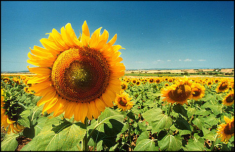
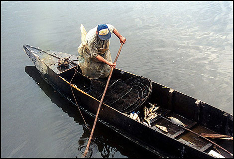
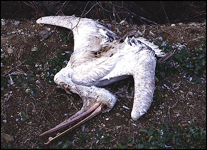

Ανθρώπινες Δραστηριότητες - Χρήσεις γης
Οι υγρότοποι αν και προσφέρουν στις τοπικές κοινωνίες πολλά και χρήσιμα στοιχεία, εν τούτοις εξακολουθούν να απειλούνται από τις αποξηράνσεις και την κακή διαχείριση.
Οι υγρότοποι επιτελούν ποικίλες φυσικές λειτουργίες από τις οποίες οι τοπικές αλλά και περιφερειακές κοινωνίες οφελούνται κατά το μέγιστο, δίχως οι ίδιες να καταβάλλουν προσπάθεια ή και κόστος για την απόκτηση των αγαθών. Πολλοί υγρότοποι είναι ιδεώδεις τόποι για πολλά είδη ψαρών, είναι πολύτιμοι για την κτηνοτροφία και προσφέρουν ιδανικές συνθήκες για την ανάπτυξη ειδών της άγριας φύσης με αποτέλεσμα να θεωρούνται πηγή οικονομικών πόρων, ψυχαγωγίας και αναψυχής.
Μεγάλες εκτάσεις του υγροτόπου του `Εβρου άλλαξαν φυσιογνωμία και λειτουργικότητα εξ αιτίας των αποξηράνσεων στις δεκαετίες του 1950 και 1960 για την απόκτηση νέας καλλιεργήσιμης γης. Τα αποστραγγιστικά και αρδευτικά έργα τα οποία περιλάμβαναν, αλλαγή της ανατολικής κοίτης του ποταμού με την κατασκευή της ευθυγράμμισης, διανοίξεις τάφρων, υψώσεις αναχωμάτων κ.ά. είχαν συνέπεια την υποβάθμιση ευαίσθητων περιοχών και την απώλεια πολύτιμων οικοσυστημάτων.
Βραχυπρόθεσμα άρχισε να γίνεται εμφανής η εξάντληση των πόρων της περιοχής και η υποβάθμιση των αξιών του. Η μείωση της αποδοτικότητας των εδαφών, η εισροή ρύπων, η ανατροπή της υδρολογικής ισορροπίας, ο περιορισμός των γλυκών υδάτων είναι τα σοβαρά προβλήματα που παρουσιάζονται σήμερα. Η επίτευξη μιάς ισορροπίας μεταξύ προστασίας και ανάπτυξης κρίνεται απαραίτητη.
Η ορθολογική διαχείριση που θα πρέπει να στηρίζεται στην αξιολόγηση των πραγματικών δυνατοτήτων της περιοχής και το μακροπρόθεσμο προγραμματισμό των έργων / μέτρων /δραστηριοτήτων προς όφελος τόσο της περιοχής αλλά και των κατοίκων, κρίνεται επιβεβλημένη.
Γεωργία
Η περιοχή του δέλτα είναι κατ`εξοχήν γεωργική περιοχή και κατέχει το 30% της συνολικής γεωργικής γης του νομού Έβρου. Στο σύνολο σχεδόν της γεωργικής γης του δέλτα καλλιεργούνται αροτραίες καλλιέργειες με κυρίαρχα είδη τα σιτηρά. Πολύ μικρά ποσοστά έχουν οι δενδρώδεις καλλιέργειες και οι λαχανόκηποι. `Αλλες καλλιέργειες είναι τα τεύτλα, ο αραβόσιτος, το βαμβάκι, τα νομευτικά είδη όπως μηδική και τριφύλλι, η βιομηχανική τομάτα, τα μποστάνια και το σπαράγγι. Πολύ μικρή είναι η συμμετοχή του ηλίανθου, σχεδόν έχει εγκαταληφθεί η καλλιέργεια αυτή στην περιοχή. Παλαιότερα υπήρχε εντατική καλλιέργεια ρυζιού. Σήμερα μικρή έκταση στην περιφερειακή ζώνη του υγροτόπου καλλιεργείται. Η οικολογική γεωργία εφαρμόζεται πειραματικά από μεμονωμένους καλλιεργητές.
Το δέλτα Έβρου ανήκει στο Ελληνικό Δημόσιο μετά όμως την κατασκευή των αποστραγγιστικών έργων μεγάλο μέρος των εκτάσεων παραχωρήθηκε σε ακτήμονες.
Οι καλλιεργούμενες εκτάσεις οι περιλαμβανόμενες στον βιότοπο είναι υπό μορφή οριστικής ή προσωρινής διανομής.
Σήμερα οι καλλιέργειες αυτές καταλαμβάνουν 53.000 στρ.
Το αποστραγγιστικό-αρδευτικό δίκτυο αποτελείται από παράλληλες και εγκάρσιες τάφρους και από δύο αντλιοστάσια στράγγισης στο Δυτικό Βραχίονα του ποταμού (Παλιομάριτσα). Για να καλυφθούν οι απαιτήσεις της άρδευσης χρησιμοποιούνται γεωτρήσεις.
Οι απαιτήσεις της γεωργίας για μεγαλύτερη παραγωγή ωθούν τους καλλιεργητές στην χρησιμοποίηση σύγχρονων μηχανημάτων, υπερβολικών ποσοτήτων λιπασμάτων και φυτοφαρμάκων και πίεσης για αύξηση της καλλιεργούμενης γης που θα σημαίνει ασφαλώς συρρίκνωση του υγροτόπου.
Κτηνοτροφία
 Οι υγροτοπικές περιοχές ανέκαθεν ήταν πόλος έλξης για τους κτηνοτρόφους λόγω των ιδιαίτερων χαρακτηριστικών που τις διακρίνει και τις διαφοροποιεί από τους άλλους ορεινούς βοσκοτόπους. Ως τέτοια χαρακτηριστικά των υγροτόπων θεωρούνται η ποιότητα, ποσότητα και ποικιλότητα της βοσκήσιμης ύλης, η διαθεσιμότητα νερού και η εύκολη πρόσβαση σε αυτό, η ομαλότητα του εδάφους και θερμική κάλυψη που προσφέρεται από την υψηλή βλάστηση. Τα πλεονεκτήματα αυτά είναι από παλιά γνωστά στους κτηνοτρόφους της ευρύτερης περιοχής του Δέλτα Έβρου οι οποίοι συνηθίζουν να στείνουν τις στάνες μέσα ή κοντά στις παρυδάτιες ζώνες οδηγώντας έτσι στη συγκέντρωση μεγάλου αριθμού ζώων, στην υπερβόσκηση και στην υποβάθμιση της περιοχής. Η κτηνοτροφία ασκείται με πολύ έντονο ρυθμό σ`όλη την περιοχή του δέλτα από κατοίκους των οικισμών `Ανθειας, Αρίστηνου και Λουτρού, Φερών, Δορίσκου, Μοναστηρακίου, Πόρου καθώς και από κτηνοτρόφους πιο απομακρυσμένων οικισμών. Είναι γεγονός ότι ο αριθμός των κατοίκων που ασχολούνται συστηματικά με την κτηνοτροφία μειώθηκε ενώ έχει αυξηθεί ο αριθμός εκείνων που διατηρούν λίγα ζώα καθώς η κύρια απασχόλησή τους είναι η γεωργία.
Οι υγροτοπικές περιοχές ανέκαθεν ήταν πόλος έλξης για τους κτηνοτρόφους λόγω των ιδιαίτερων χαρακτηριστικών που τις διακρίνει και τις διαφοροποιεί από τους άλλους ορεινούς βοσκοτόπους. Ως τέτοια χαρακτηριστικά των υγροτόπων θεωρούνται η ποιότητα, ποσότητα και ποικιλότητα της βοσκήσιμης ύλης, η διαθεσιμότητα νερού και η εύκολη πρόσβαση σε αυτό, η ομαλότητα του εδάφους και θερμική κάλυψη που προσφέρεται από την υψηλή βλάστηση. Τα πλεονεκτήματα αυτά είναι από παλιά γνωστά στους κτηνοτρόφους της ευρύτερης περιοχής του Δέλτα Έβρου οι οποίοι συνηθίζουν να στείνουν τις στάνες μέσα ή κοντά στις παρυδάτιες ζώνες οδηγώντας έτσι στη συγκέντρωση μεγάλου αριθμού ζώων, στην υπερβόσκηση και στην υποβάθμιση της περιοχής. Η κτηνοτροφία ασκείται με πολύ έντονο ρυθμό σ`όλη την περιοχή του δέλτα από κατοίκους των οικισμών `Ανθειας, Αρίστηνου και Λουτρού, Φερών, Δορίσκου, Μοναστηρακίου, Πόρου καθώς και από κτηνοτρόφους πιο απομακρυσμένων οικισμών. Είναι γεγονός ότι ο αριθμός των κατοίκων που ασχολούνται συστηματικά με την κτηνοτροφία μειώθηκε ενώ έχει αυξηθεί ο αριθμός εκείνων που διατηρούν λίγα ζώα καθώς η κύρια απασχόλησή τους είναι η γεωργία.
Η συνεχής επέκταση των καλλιεργειών μείωσε σε μεγάλο βαθμό την επιφάνεια της ελεύθερης βόσκησης αυξάνοντας ταυτόχρονα την πίεση βοσκής στα εναπομείναντα, με αποτέλεσμα να παρατηρείται ο μεγάλος αριθμός ζώων στον υγρότοπο. Τα ζώα βόσκουν συνήθως ανεξέλεγκτα σ`όλη την έκταση αφού για ανεύρεση τροφής φτάνουν όταν το ύψος του νερού το επιτρέπει μέχρι και τα νησάκια Ασάνη και Καραβιού Ξηράδι.
Ένας αρκετά μεγάλος αριθμός ζώων χρησιμοποιεί τον υγρότοπο για ένα μεγάλο διάστημα του χρόνου, 7-9 μήνες, ανάλογα με την ύπαρξη βοσκήσιμης ύλης, το ύψος στάθμης νερού και τη θερμοκρασία. Τον χειμώνα όταν οι καιρικές συνθήκες δεν το επιτρέπουν τα ζώα οδηγούνται στους σταύλους όπου τρέφονται αποκλειστικά με έτοιμες τροφές.
Η ελεύθερη και εντατική βόσκηση στο δέλτα `Εβρου έχει αρνητικές επιδράσεις στο οικοσύστημα. Η βλάστηση επηρεάζεται άμεσα με μείωση της κάλυψης, αλλαγές των ειδών μέχρι πλήρη αφανισμό ορισμένων εξ αυτών. Η πλούσια άγρια πανίδα και ιδιαίτερα οι πληθυσμοί των πουλιών ιδίως αυτών που φωλιάζουν στο έδαφος ενοχλούνται από την παρουσία των ζώων. Φωλιές, αυγά και νεοσσοί καταπατούνται ενώ πολλές φορές εμποδίζεται το φώλιασμα και η διαδικασία της αναπαραγωγής.
Η σταθερότητα των οχθών συχνά καταρρέει από τα ποδοπατήματα των ζώων ενώ στις περιοχές που συναθροίζονται τα νερά παρουσιάζουν αυξημένες αζωτούχες και φωσφορούχες ουσίες καθώς και παθογενή βακτήρια από τις εκκρίσεις των ζώων.Επίσης από την συγκέντρωση της αμμωνίας και την έλλειψη οξυγόνου στις περιοχές αυτές κινδυνεύει η ιχθυοπανίδα.
Ωστόσο σ`ένα παραγωγικό χώρο όπως το Δέλτα Έβρου, η ορθά ασκούμενη κτηνοτροφία όχι μόνο δεν αποτελεί κίνδυνο αλλά μπορεί να συνεισφέρει στη διατήρηση της ισορροπίας του οικοσυστήματος διατηρώντας την απαραίτητη ποικιλότητα των ειδών.
Μελισσοκομία
H μελισσοκομία ασκείται από τους ντόπιους σαν συμπληρωματικό εισόδημα. Το δέλτα `Εβρου χρησιμοποιείται ορισμένες εποχές του έτους από τους μελισσοκόμους για ανεύρεση τροφής.
Αλιεία
Η αλιεία στο Δέλτα Έβρου είναι μία συμβατή με το οικοσύστημα δραστηριότητα, αρκεί να ασκείται ορθολογικά και με την προυπόθεση της συνετής διαχείρισης του οικοσυστήματος.
Κατά τα τελευταία χρόνια, παρατηρήθηκε μείωση σε ποσότητα αλλά και ποικιλία ψαριών (όπως τσιπούρες, λαβράκια, ακρανιοί, κέφαλοι, καλκάνια, γαρίδες) σε ανησυχητικό βαθμό.
Η ρύπανση, η αλλοίωση του υδρολογικού καθεστώτος, αλλά και η υπεραλίευση είναι οι κύριες αιτίες της υποβάθμισης αυτής.
Με την αλιεία στο δέλτα ασχολούνται κάτοικοι των δήμων Αλεξανδρούπολης, Τραιανούπολης και Φερών.
Οι επαγγελματίες αλιείς έχουν συστήσει τον αλιευτικό συνεταιρισμό παράκτιων αλιέων "Ο ΕΒΡΟΣ" ο οποίος εκμεταλλεύεται και το μοναδικό ιχθυοτροφείο στη λιμνοθάλασσα Μονολίμνη (Παλούκια). Η έκταση της λιμνοθάλασσας είναι 1.800 στρ. και η παραγωγή αποτελείται από χέλια, νιάκια (αυγομένα κεφάλια), κεφάλους, μυξινάρια, τσιπούρες σε μικρές ποσότητες, λαυράκια β`κατηγορίας, σπόροι, σκουμπριά, αθερίνα, γλωσσάκια β`κατηγορίας, κουτσομούρες.
Αλλη περιοχή όπου ασκείται η αλιεία είναι η ευθυγράμμιση.
Οι τρόποι αλιείας στην ευρύτερη περιοχή του δέλτα είναι τα δίχτυα, τα παραγάδια, οι βολκοί, τα καλαμωτά και οι ιχθυοπαγίδες στο ιχθυοτροφείο κοντά στα στόμια σόδευσής του.
Επίσης στη τοποθεσία Μαυρότοπος στη δυτική περιοχή του δέλτα λειτουργεί από ιδιώτη μονάδα εντατικής καλλιέργειας θαλάσσιας γαρίδας.
Ψάρεμα από ερασιτέχνες ψαράδες γίνεται σχεδόν σ`όλα τα κανάλια του δέλτα γλυκού και αλμυρού νερού.
Κυνήγι
Το κυνήγι είναι μια από τις μεγαλύτερες απειλές της άγριας ορνιθοπανίδας των υγροτόπων. Ο τρόπος με τον οποίο ασκείται το κυνήγι, ο ανεξέλεγκτος αριθμός των κυνηγών, η διανυκτέρευση σε αυθαίρετα κτίσματα "καλύβες", η ευκολία πρόσβασης και στους πλέον απομονωμένους πυρήνες, η επιβάρυνση του περιβάλλοντος και ιδιαίτερα των ρηχών νερών των λιμνοθαλασσών με σκάγια μολύβδου, αποτελούν σοβαρότατες αιτίες για την συνεχιζόμενη μείωση των πληθυσμών πολλών υδροβίων πουλιών που ξεχειμωνιάζουν στον υγρότοπο του Έβρου.
Όχληση
Η όχληση που δημιουργείται από τους επισκέπτες των υγροτοπικών περιοχών και ο ελλειπής έλεγχος της εισόδου των τουριστών στον υγρότοπο, αποτελεί μία επιπλέον απειλή και μάλιστα αυξανόμενη κατά τα τελευταία χρόνια. `Οσο και αν οι τουρίστες θεωρούνται μια πηγή οικονομικού οφέλους για την ευρύτερη περιοχή του υγροτόπου, ο τουρισμός δεν παύει να είναι και μια πηγή διατάραξης και όχλησης της ζωής του οικοσυστήματος. Ιδιαίτερα όταν δεν υπάρχει ολοκληρωμένο σχέδιο διακίνησης των τουριστών σε ένα υγροτοπικό οικοσύστημα, το οποίο να λαμβάνει υπ`όψιν του τη φέρουσα ικανότητα του υγροτόπου, την εποχή επίσκεψης, τα μέσα επίσκεψης και τον τρόπο ξενάγησης σ`ένα υγρότοπο.